Next Mile Tracker
User Guide
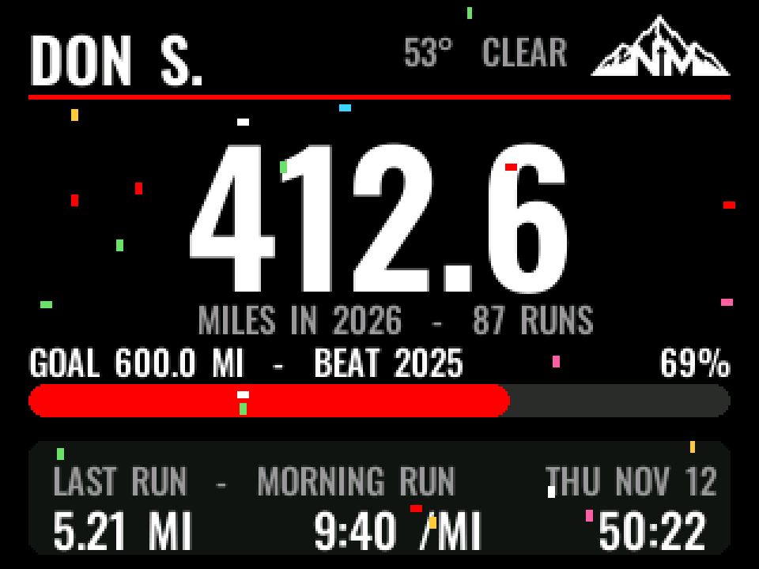
Your miles for the year, straight from your watch.
Set up in about 5 minutes. No app to install.
Designed and built by DS3design for Next Mile Apparel
Meet your tracker
The Next Mile Tracker sits on a desk or shelf and shows how many miles you've run this year. It gets them from your watch's app over your home WiFi. It updates itself all day, celebrates every new run, and starts a fresh count every January 1.
What you need
- A USB phone charger (any standard USB wall plug) and the USB cable that came with the tracker.
- Your home WiFi name and password.
- Your phone, with its camera, connected to your home WiFi.
- The account your watch uses, for example COROS, Garmin Connect, Wahoo or Apple Health.
The parts
| Part | What it does |
|---|
| Touchscreen | Shows your miles and walks you through setup. Press firmly with a fingertip, or use the stylus. |
| Stylus | Tucked into the slot along the bottom edge of the case. Handy for typing your WiFi password. Push it in until it clicks. |
| Light sensor | The small window on the front, beside the screen. It dims the screen when the room goes dark. Don't cover it. |
| Color light | On the back. It glows on the wall behind the tracker when you have new miles. |
| USB port | On the side. This is where the power goes in. |
| Reset hole | On the back. You won't normally need it. A paperclip press restarts the tracker but keeps all your settings. |
Good to know
- It only needs power and WiFi. There's no battery, so it stays plugged in.
- It works with 2.4 GHz WiFi, which almost every home router has. If your router shows two names, pick the one without "5G".
- Unplugging it is fine. It remembers everything and catches up on any runs you did while it was off.
Or set up WiFi with your phone
If you'd rather type on your phone, tap Use my phone on the WiFi list.
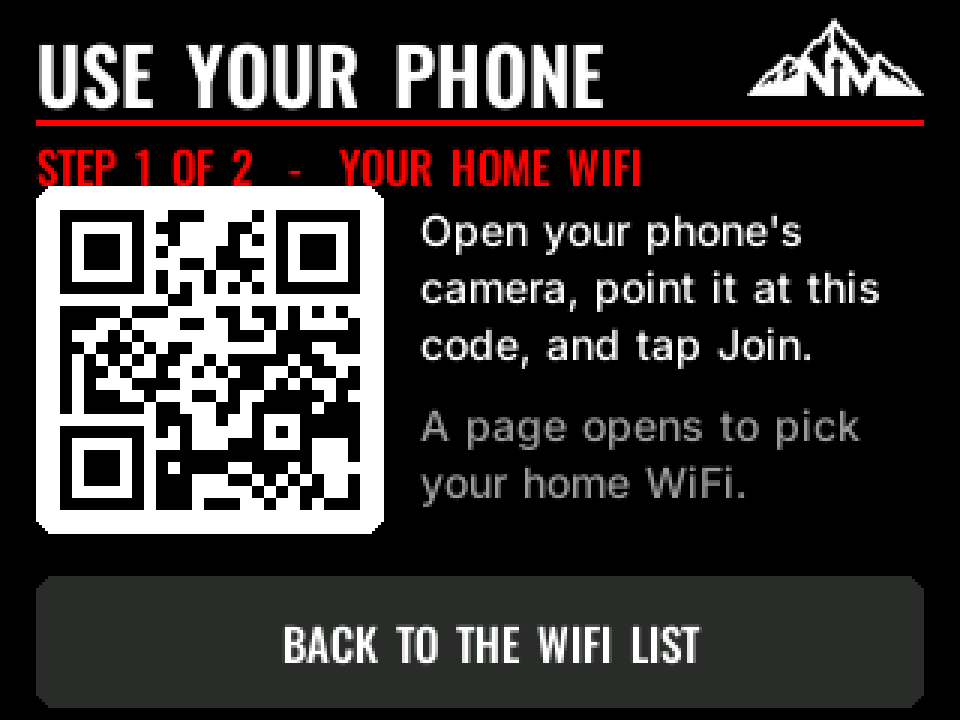
- Open your phone's camera and point it at the square code.
- Tap Join when your phone asks to join the network.
- A page opens by itself. Pick your home WiFi, type the password, and save.
Your phone goes back to your home WiFi on its own once the tracker is connected.
Tap Back to the WiFi list to go back to typing on the tracker.
Setup, step 2: link your watch
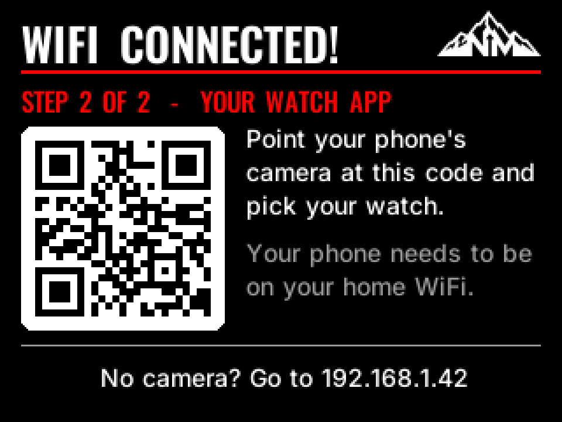
4Scan the new code
When the tracker says WiFi connected!, it shows a new square code. Make sure your phone is on your home WiFi, then point the camera at the code and tap the link that appears.
No camera? Type the address shown under the code into your phone's web browser.
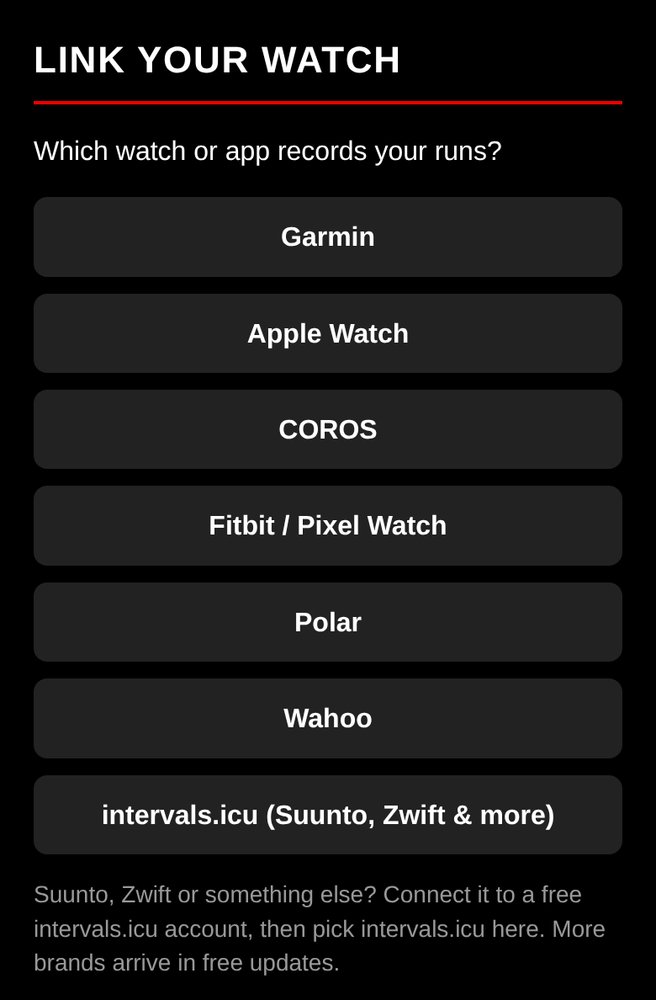
5Pick the app your watch uses
Your phone shows a list of brands. Tap yours and follow the steps on the next page.
Suunto, Zwift or another brand? Connect your watch to a free intervals.icu account, then pick intervals.icu here.
Linking each brand
COROS or Wahoo
Tap the brand, sign in with your COROS or Wahoo account and tap Allow. You come back to the tracker's page, and your miles appear on the tracker within a minute.
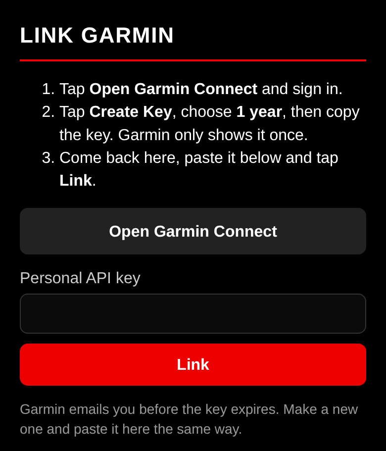
Garmin
- Tap Open Garmin Connect and sign in.
- Tap Create Key, choose 1 year, then copy the key. Garmin only shows it once.
- Come back to the tracker's page, paste the key and tap Link.
Garmin emails you before the key runs out. Make a new key and paste it on the settings page the same way.
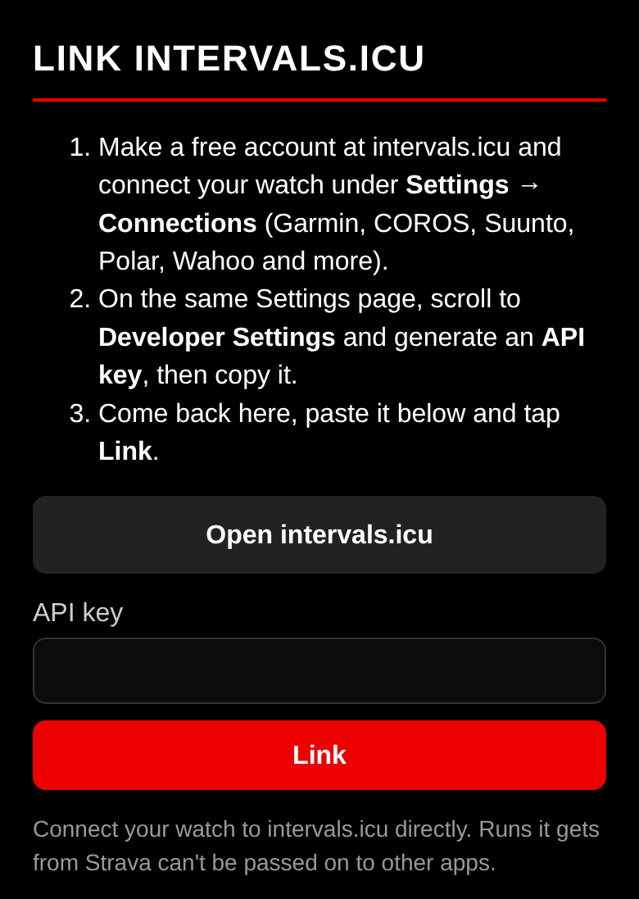
intervals.icu (Suunto, Zwift and more)
- Make a free account at intervals.icu and connect your watch under Settings → Connections.
- On the same Settings page, scroll to Developer Settings and copy your API key.
- Paste it on the tracker's page and tap Link.
Connect your watch to intervals.icu directly. Runs that intervals.icu gets from Strava can't be passed on to the tracker.
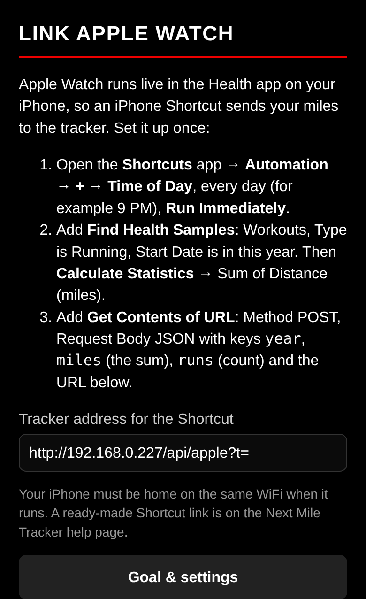
Apple Watch
Apple doesn't let other devices read your workouts over the internet, so a free iPhone Shortcut sends your miles to the tracker once a day. The tracker's page walks you through making it in the Shortcuts app, which is already on your iPhone, and gives you the tracker address to paste in.
Your iPhone has to be at home on the same WiFi when the Shortcut runs.
Your main screen
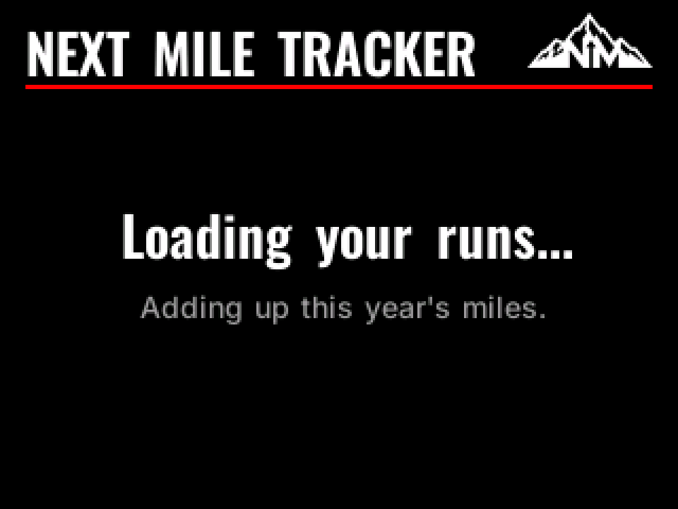
After linking, the tracker spends a minute adding up this year's and last year's miles. Then the main screen appears and stays there.

- Your name, as it appears in your watch app. You can change it on the settings page.
- Today's weather for your town, and the chance of rain when there is one.
- Miles this year, and how many runs they came from.
- Your goal, how far along you are (69% here), and a bar that fills as you go.
- Your latest run: name, distance, pace per mile, date and time.
Your goal
To start with, your goal is last year's exact miles, so you're racing last year's you. You can set your own number on the settings page any time.
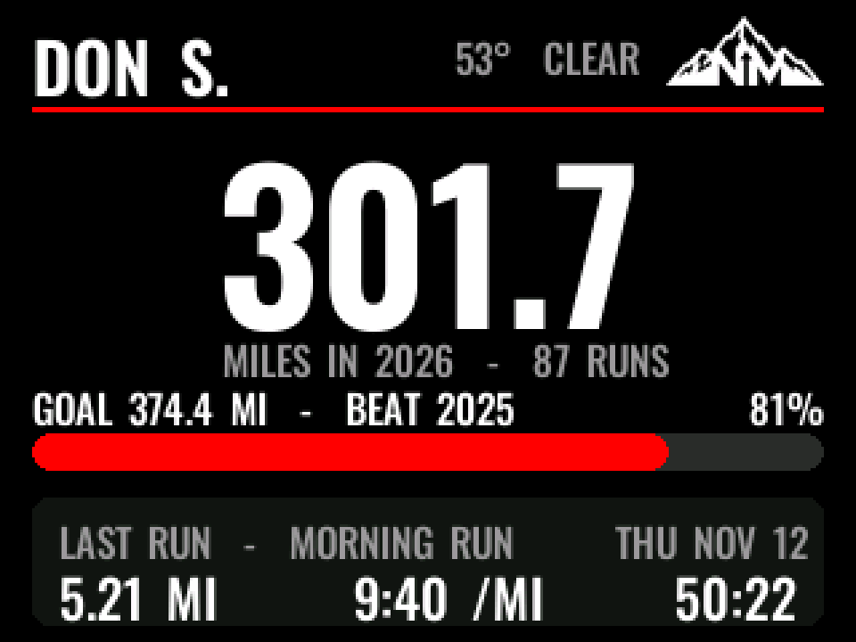
Chasing last year's 374.4 mi
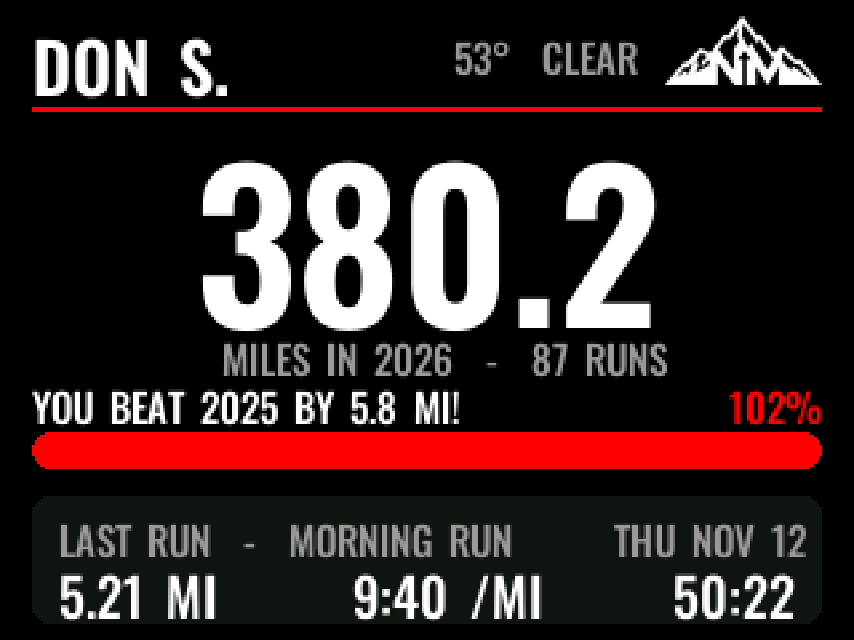
Last year beaten
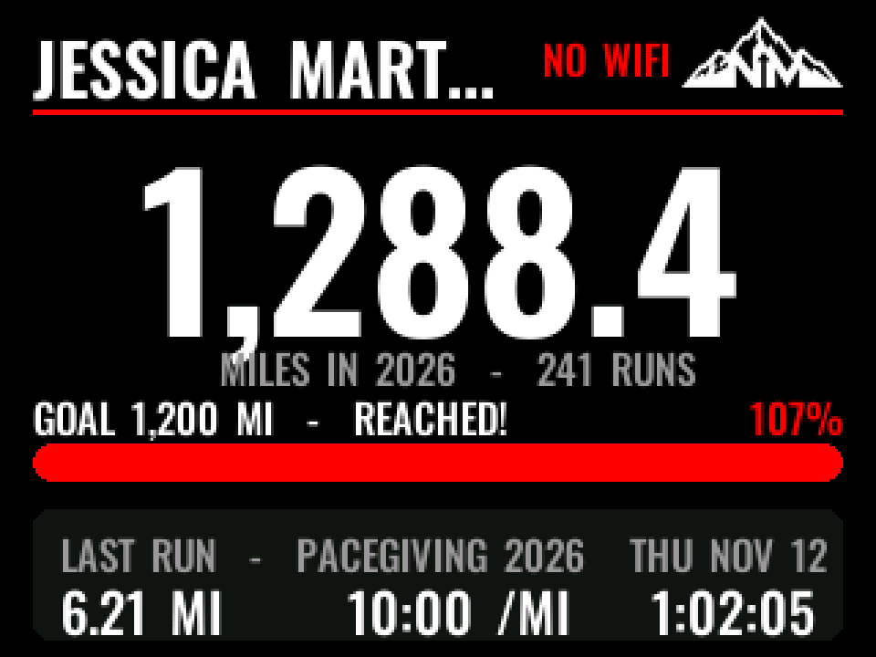
Your own goal reached
Celebrations
New miles
For 6 hours after a new run comes in:
- Small confetti drifts down the screen, light enough that you can still read everything.
- The color light on the back glows and pulses in your color theme.
This works even if the tracker was unplugged during your run. It celebrates as soon as it catches up.
Milestones
The back light flashes fast for a minute when you:
- pass every 100 miles,
- reach your goal, or
- pass last year's total.
Tap the screen to stop the flashing early. The 6-hour glow and confetti keep going.
New year
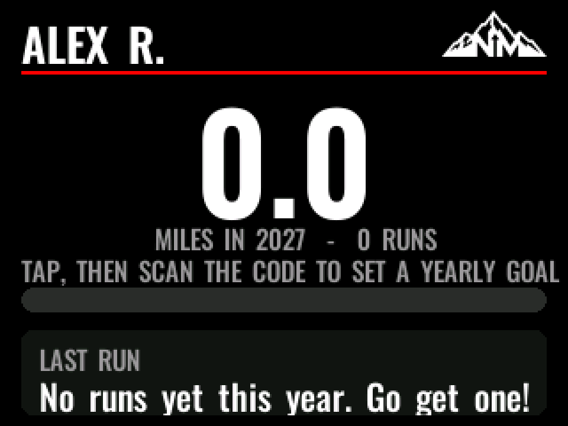
At midnight on January 1 (your time zone), the count goes back to 0.0. The year you just finished becomes the new "last year" to beat.
Settings on the tracker
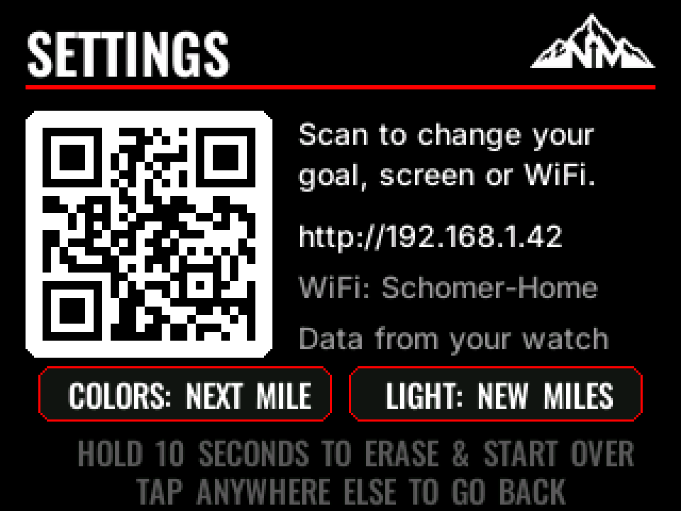
Tap the main screen to open this screen.
- Colors switches to the next color theme each time you tap it.
- Light switches the back light between New miles (glows only to celebrate) and Always on (glows all the time, with a rainbow while celebrating).
- The square code opens the full settings page on your phone (next page).
- Tap anywhere else to go back to your miles.
Color themes
The back light uses the color of your theme.
Dark rooms
With Dim the screen in a dark room on (it's on to start with), the screen dims when the lights go down, and switches off after 2 minutes of darkness. Touch the screen to light it up again. That first touch only wakes the screen. The back light stays on in the dark, so you can still see when you have new miles.
Settings on your phone
Tap the tracker's screen and scan the square code with your phone's camera. Your phone has to be on your home WiFi. Change what you like and tap Save.
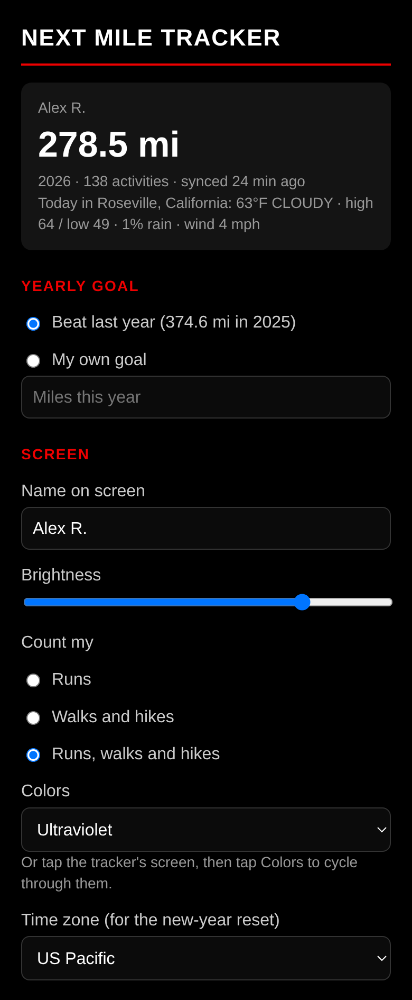
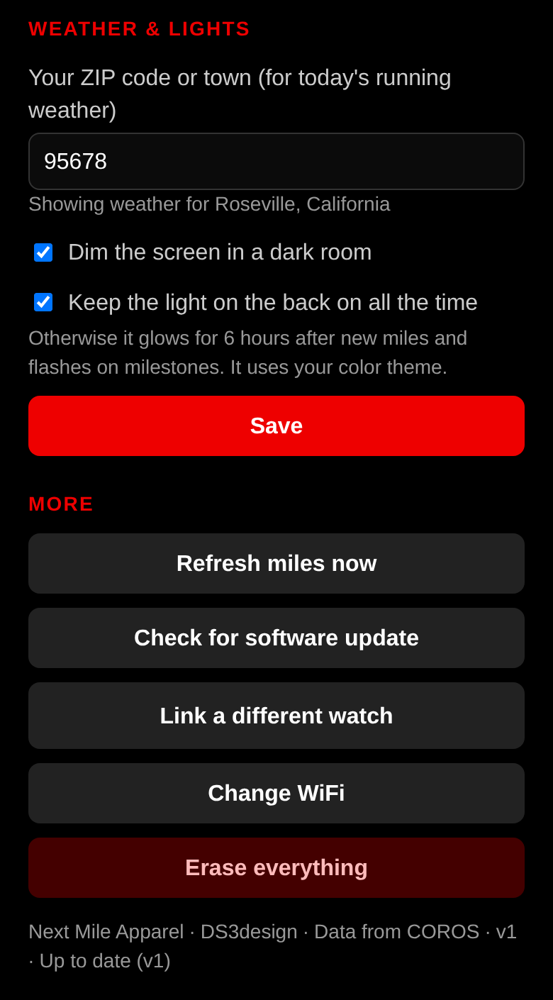
| Setting | What it does |
|---|
| Yearly goal | Beat last year uses last year's exact miles (shown in brackets). My own goal lets you type any number. |
| Name on screen | The name across the top of the tracker. |
| Brightness | How bright the screen is in a lit room. |
| Count my | Runs only, walks and hikes only, or both. |
| Colors | The same 8 themes as the Colors button. |
| Time zone | Set automatically from your phone. It decides when the new year starts. |
| ZIP code or town | Where today's weather comes from. |
| Dim the screen in a dark room | See "Dark rooms" on the previous page. |
| Keep the light on the back on all the time | The same as the Light button on the tracker. |
| Refresh miles now | Checks for new runs right away instead of waiting. |
| Link a different watch | Switch to another brand or account. |
| Change WiFi | Takes you back to the WiFi list, for example after a new router. |
| Erase everything | Clears WiFi, the watch link and settings. Use it before giving the tracker away. |
It runs itself
- New runs show up within about 30 minutes of syncing to your watch app.
- Once a day it recounts the whole year, so edited or deleted runs get corrected.
- Software updates download and install by themselves. The screen may go blank for a moment while it restarts.
- Power cuts are fine. It reconnects and catches up when the power comes back.
Troubleshooting
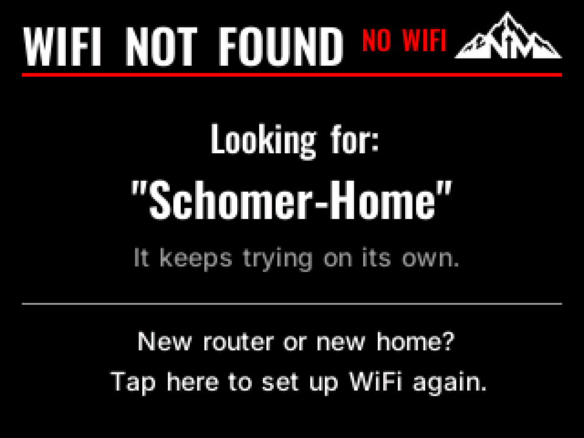
"WiFi not found" or a red NO WIFI
Your WiFi is down or has changed. The tracker keeps trying by itself. If you got a new router or moved, tap the screen to pick your new WiFi. Your watch link and goal are kept.
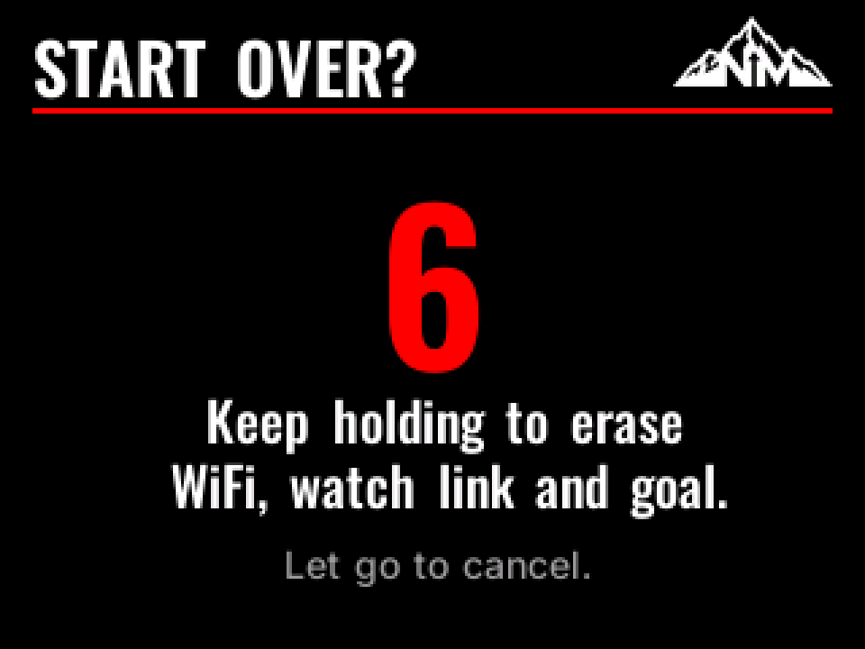
Start over
Hold your finger on the screen for 10 seconds. A countdown appears, and at zero the tracker erases WiFi, the watch link and settings, then starts setup again. Let go before zero to cancel.
| Problem | Try this |
|---|
| My WiFi isn't in the list | Tap Look again. Move the tracker closer to the router. Pick the name without "5G". |
| The settings page won't open on my phone | Your phone must be on the same home WiFi as the tracker, not on mobile data. |
| A run is missing | Check that it shows in your watch's app as a run (trail and treadmill runs count). Then tap Refresh miles now on the settings page. |
| A small red dot in the corner | The last update couldn't reach your watch account. It retries on its own. |
| The screen is dark | The room is dark. Touch the screen to wake it, or turn off Dim the screen in a dark room. |
| The screen doesn't react to touch | Press a little more firmly, or use the stylus. |
| Anything else | Unplug it for 10 seconds and plug it back in. |
Care
For indoor use only. Keep it dry and out of direct sun. Clean the screen with a soft, dry cloth. Your miles stay on the tracker and are only used to show them to you.
More help: ds3design.github.io/nextmile-tracker · Made by DS3design for Next Mile Apparel. Not affiliated with Garmin, Apple, COROS, Wahoo, Suunto or intervals.icu.